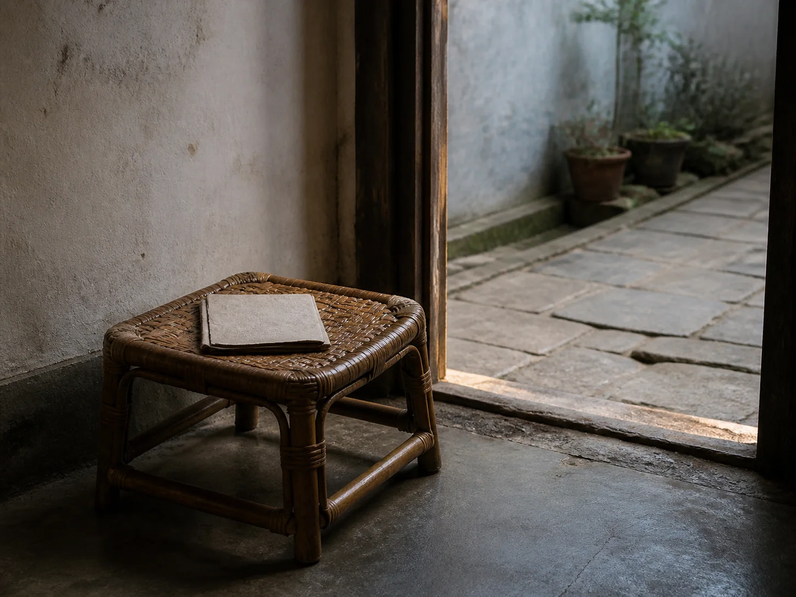

The Rattan Stool Beside the Open Door
A low rattan stool moved between the cool room and the open doorway, following shade, conversation, and the small pauses of an ordinary day.

A seat low to the floor
The stool stood below the level of every table in the room. Its square woven top had softened in the center, and the wrapped joints had darkened where hands carried it from one useful place to another. Bare feet could find the lower rail while elbows settled naturally onto knees.
It was light enough to move without announcing a rearrangement of furniture. A child could pull it toward a grandparent, a visitor could turn it toward the courtyard, and someone shelling beans could bring the work down to lap height. The stool belonged less to one corner than to whoever needed a temporary seat.
Carried toward the doorway
In the late afternoon, the doorway offered a narrow compromise between room and lane. The interior remained shaded, while conversation, bicycle bells, and the sound of vegetables being rinsed passed outside. The stool stopped just behind the threshold, close enough to hear both spaces without blocking anyone's path.
The Cane Chair Under the Grape Arbor gives a watchman a broader evening seat, while The Midday Rest After Lunch follows a tailor to a narrow bench. The rattan stool carries less ceremony than either: it supports a pause that may end as soon as someone calls from the courtyard.
The room after sitting
A folded newspaper might remain on the seat after the reader stood. Later, a bowl of beans or a mending basket could replace it, and the stool would become a low work surface. Small scratches on the floor showed how often the same four legs changed purpose.
Before the door was closed, the stool returned inside. It was turned once to check a loose binding and placed flat against the wall so no one met it in the dark. The doorway became empty again, but the worn center of the weave kept the shape of many brief sittings.